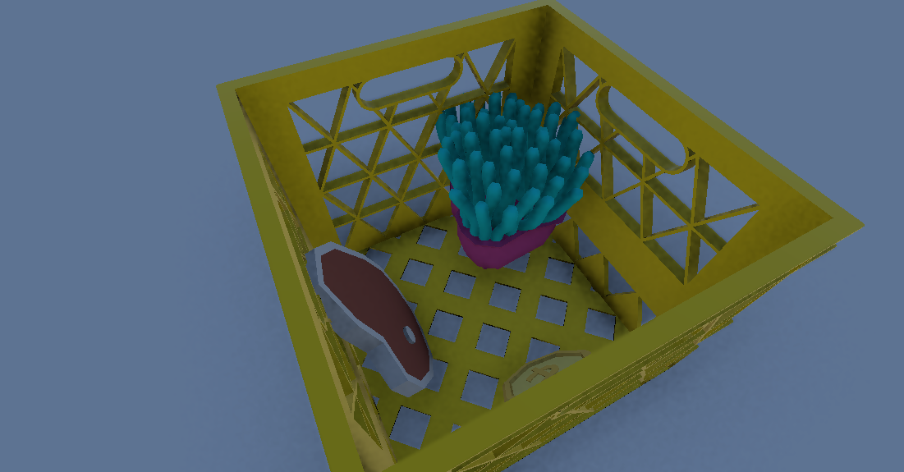
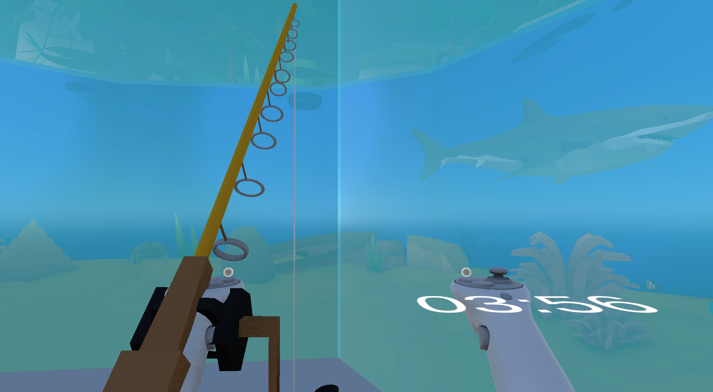
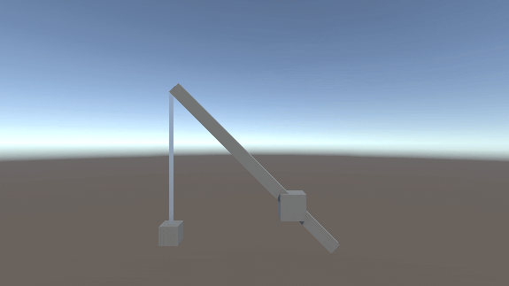

Overview
Projekt H.A.I was created as the result of a very specific assignment: "Make it real". In practice, this meant we needed to create an immersive VR gameplay experience with some connection to the real world. My team decided on the idea of a fishing game and also found a funny premise: a burglar sneaking into a public aquarium to steal the fish out of the tank. The real-life element comes from a custom controller, which features an added crank that controls the fishing rod in-game.
The core gameplay loop revolves around a number of steps. First, the player needs to locate a fish in the aquarium and find the correct bait in their bait box. With the bait prepared, the player needs to lower the fishing hook with the bait near the fish into the water. When the fish bites the hook, the player can feel their controller vibrating and needs to hold still for a few seconds. When the vibration stops, they quickly hoist the fish out of the water before the controller starts vibrating again. After getting the fish out of the water, it needs to be brought to its designated plastic bag, after which it is finally marked as caught. The player needs to catch all three fish (a crab, a clownfish and a shark) before the timer on their wrist runs out, which signals a security guard to break into the room and chase the player until they are caught and transported to the game-over scene. Catching all the fish before the time limit and fleeing the aquarium with a rope will transport the player to the victory scene.
To achieve a connection between the real crank and the game, we connected the crank to an ESP32 microcontroller that connects to an MQTT server and writes the current rotation value of the crank to a specific topic. The game then connected to the MQTT server, read the rotation value, and smoothly rotated the virtual crank accordingly, changing the fishing hook's height in the process.
Our team consisted of three developers: two media informatics students with Unity experience and one pure informatics student without Unity experience. Having the most experience in Unity game development, I was tasked with the more complex system development regarding the bait-rod-fish interactions as well as figuring out the fishing rod behaviour from the rotation data.
My Role: Systems Programming
While this was a team effort, my primary responsibility was the core gameplay systems, specifically the interactions between the fishing rod, bait, and fish, as well as the translation of real-life rotation data to the virtual fishing rod. This was more than just coding mechanics; it was about creating a satisfying, intuitive interaction model in VR.
Core Responsibility
Design and implement the bait-fishing rod-fish interaction system that made using the custom controller and in-game objects feel intuitive and fun.
Bait System
The baits can be accessed at the bait box, which has an infinite supply of them to prevent a bait from getting stuck out of reach. The player cannot fill the room with infinite bait objects though, as older bait objects are destroyed after a specific number of baits are created. The fish hook has a socket object that a bait can slot into when the grab button is released in its vicinity. Every bait has a corresponding fish that it attracts. The crab has a coin, the clownfish has an anemone and the shark has a steak. Fish can obviously only be attracted if the bait is underwater, so the player needs to lower the fishing rod near the designated fish to try to catch them.

Fishing Rod Mechanics
The fishing rod is permanently attached to the player's left hand, consisting of a crank, the main rod and a fishing line with a hook at the end. The fishing line consists of a line renderer that is controlled by a Verlet-integration-based rope simulation. The crank rotation and the length of the fishing line are controlled by the physical crank we added to our VR controller. Every time the real crank is rotated, the new rotation position is read by the game and the crank rotates smoothly to match the new rotation. This method works smoothly and responsively with minimal input delay.
Integration Challenges
Setting up the microcontroller, MQTT server, and game connection required some assistance and took a few weeks to get running, while we got gameplay interactions working much more quickly. The rope simulation remained tricky to the end, though. The rope sometimes disconnected from the fishing rod due to inconsistencies between the physics refresh rate and the refresh rate of the VR controller object, which was a difficult problem that was still not fully solved in the final build.
Gallery
Screenshots and in-game footage from Projekt H.A.I, showing the aquarium environment, the fishing mechanics in action, and the custom hardware controller. Gameplay footage was captured using the OpenXR XR Device Simulator, as I no longer have access to the custom controller my team built.





Technical Architecture
Stack & Tools
Engine
Unity with OpenXR
Language
C#
VR Platform
Windows VR
Team Size
3 Developers
Key Technical Achievements
The most distinctive technical achievement was the real-world hardware integration. Rather than relying on standard controller input, I was able to translate raw encoder pulses from the physical crank into meaningful in-game values — computing angular deltas, converting them to rope length increments based on a configurable spool circumference, and driving both the visual and physical simulation in the same frame. This meant the game felt directly coupled to the real object in the player's hand, which was central to the whole experience.
A close second was the rope simulation. Rather than using Unity's built-in physics for the fishing line — which would have been difficult to control precisely — I implemented a custom Verlet integration system building upon an algorithm I found here, with a configurable constraint-relaxation pass to enforce segment lengths. This gave full control over how the line behaved as the player reeled in or let out slack, and kept the hook's world position stable enough for the fish AI to reason about reliably.
On the systems side, extending Unity's XR Interaction Toolkit through custom socket interactors was a non-trivial integration challenge. Each socket (the hook, the bait and the fish box) needed to enforce game logic (bait type validation, interaction layer swapping, species filtering) while remaining compatible with the toolkit's event model. Getting layer mask switching right, particularly ensuring caught fish transitioned cleanly between their swimming and grabbable states without physics artifacts, required careful sequencing of the XR lifecycle callbacks.
VR-Specific Challenges
As already mentioned, the rope simulation had some trouble staying connected to the fishing rod while in VR mode, because there was a significant difference in refresh rates between the physics simulation and the controller object.
Additionally, it was quite challenging to prevent the player from reaching areas they should not be able to reach, which required me and the team to diligently tag areas that should be off-limits accordingly.
Lessons Learned
This project opened my eyes to how much is possible in game development, even for a small team of students. At the start of the project, I had never developed a VR experience or connected a Unity game to a microcontroller, but in the end it actually worked. This project was a blast to work on, and I had a lot of fun implementing all the small gameplay interactions and brainstorming with my team on things we could add or improve.
This project was, however, also a lesson in working on a single Git repository as a team, which requires setting up robust structures and communicating effectively.
Collaborative Success
Projekt H.A.I was a testament to what a cohesive team can achieve. My systems programming provided the interactive foundation, but as a team we made it a fun, worthwhile experience in addition to it being a technical showcase for a game with a custom out-of-game element.